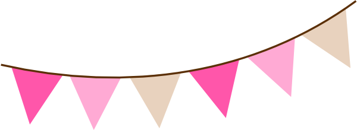

B. Hayden

Ready to work!
Featured Projects
I'm currently in the process of constructing more projects to showcase here!
The list will be updated accordingly.
Work Experience
Most of my work has been in customer service, working in teams and managing for approximately 8 years.
Brand Ambassador
Various companies
2019-Present
Showcasing products and knowledge to a niche market, changing with each project.
Duties include:
- Set up and break down of event spaces
- Demonstrating and/or offering services
- Cataloguing inventory and taking photographs
- Having a positive attitude and readiness to work
Customer Service
Restaurants, retail
2012-2020
Committing to high quality and timely service.
Duties include:
- Operating equipment (fryers, ovens, grills, etc. in a kitchen; band saws, slicers, compactors in retail)
- Having camaraderie that supports teamwork
- Managing teams of less than 10 and meeting sales projections
- Order/stock of inventory, money handling, admin paperwork, etc.
Massage Therapy
Various clinics (license inactive)
2015-2017
Providing quality of life services with integrity
Duties include:
- Supporting care with proper intake forms, questions, and relevant medical knowledge to determine therapy goals
- Various techniques such as: Swedish, deep tissue, neuromuscular, pre- and post- sports massage, prenatal, Shiatsu, and more.
- Keeping knowledge up-to-date with educational courses and certificates
- Having a genuine desire to help others
Education
Franklin Parish High School // Winnsboro, LA.
HS Diploma
Participated in the school's color guard team.
Blue Cliff College // Lafayette, LA.
Associate's Degree
Massage therapy technical degree, with 500 credit hours including clinical practice.